Nikita
AI Engineer · ComfyUI · LoRA · Python pipelines for image and video
Built a production pipeline for April, a virtual influencer. It writes the story, generates photos and videos in ComfyUI on cloud GPUs with custom-trained LoRAs, edits the clip and publishes it. April lives on Instagram.
“I live and breathe neural networks. Goal: build something big.”
Trained April's LoRA on Flux, Qwen-Image 2.1 and Fibo 2 with ai-toolkit. Datasets and captions curated by hand.
Combine my LoRA with ready-made ones: realism, phone-camera style, lightning/turbo at 4–8 steps. Weights tuned per task.
24 custom workflows: ControlNet (depth, pose), multi-reference, masked face upscale, image→video and ref→video with audio.
~26,000 lines of my own Python. ComfyUI via API, RunPod provisioning built into the automation, automatic QC of every generation.
Remotion or HyperFrames. Any vertical social format: build it by hand once, then turn it into a working pipeline.
A multi-agent system on Claude Code: each agent has a role and reads only what its task needs, heavy work goes to sub-agents via files. “Done” counts only after a deterministic gate passes, not because an agent says so.
Clips made by the pipeline
A script detects steps from pose, the edit cuts clips to the beat.
Outfit of the day at real Minsk locations. LoRA + camera style.
MiniMax H3 from 4 references: face, outfit and pose hold for the whole clip.
A Reels trend recreated without the source video: every frame and every motion generated anew.
A hyper-realistic story, made end to end by the pipeline
On-screen text is in Russian, April's audience language. Turn on sound.
From idea to post, hands-off
Each step is a separate module. Steps hand files to each other and are checked by gates, so a failure shows up immediately and never reaches publishing.
Story
Claude · character diaryAn agent runs April's life and decides what to shoot today: outfit, place, action.
References
Pinterest · OpenCLI · own libraryFinds references for clothes, places and poses, crops them and adds them to the job.
Cloud GPU
RunPod APIRents a suitable GPU, installs ComfyUI, nodes and weights from HuggingFace, watches idle time and limits.
Frames
ComfyUI · Qwen-Image 2.1 / Fibo 2 + LoRABatched, with ControlNet and multi-reference; face upscale as a separate graph.
Video
ComfyUI · MiniMax H3 i2v / ref2vClip with audio from a frame, RIFE interpolation, SageAttention speed-up.
QC
Python gatesAutomatic checks: artifacts, face, size, duration. Rejects never move on.
Edit
Remotion / HyperFrames · pose and music analysisTrack selection, cuts on the beat, text and subtitles.
Publish
Upload-Post · Telegram botPost to social media and a Telegram report: what shipped, what failed and why.
A character you recognise in every frame
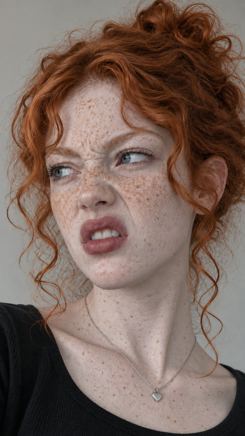
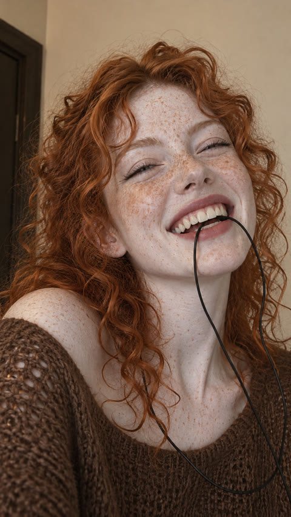
 dataset → training →
dataset → training →
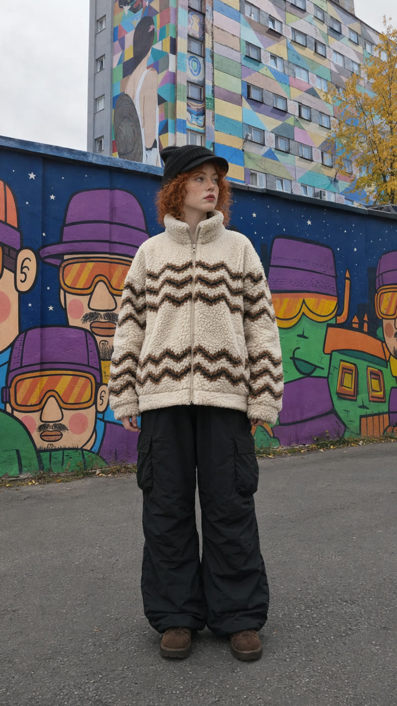
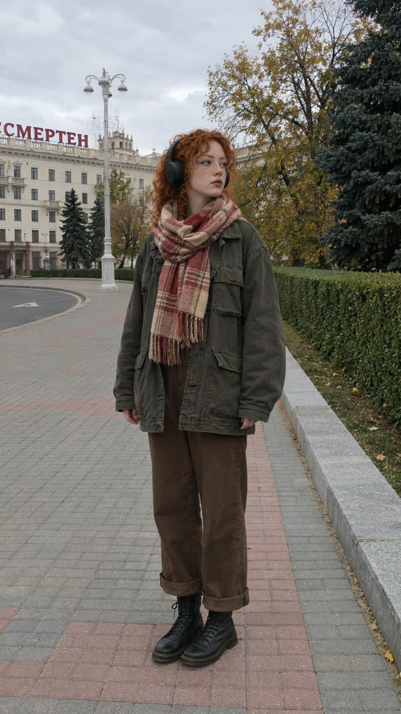
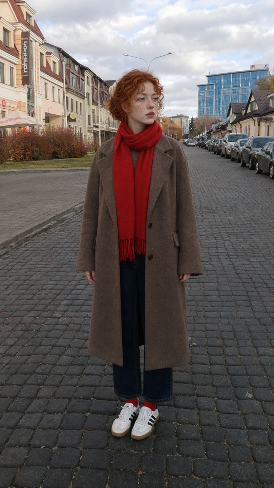
My own workflows
Screenshots from a live ComfyUI. Tap an image to enlarge.
LoRA stack: character shot at a location
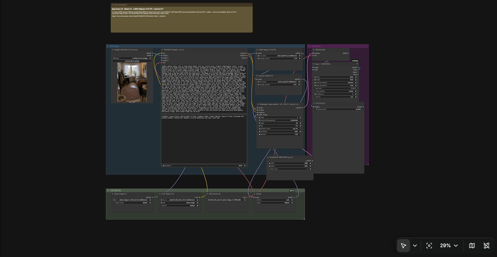
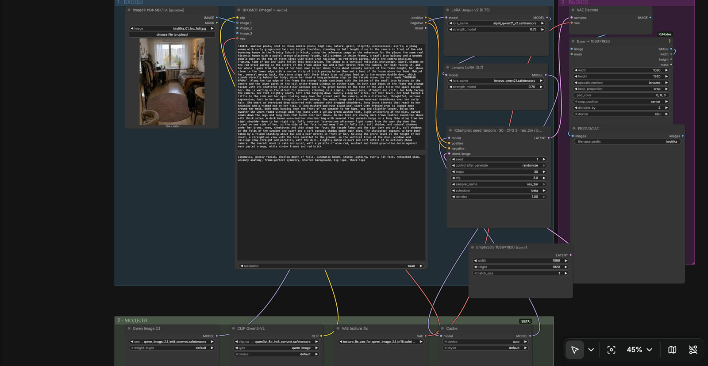
My LoRA + camera-style LoRA; the location comes in as a reference.
ControlNet depth: placing the character into a location

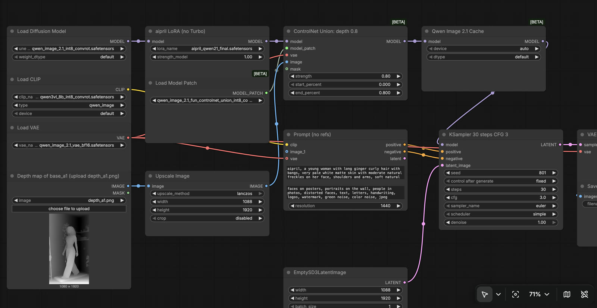
Scene depth keeps the geometry of the place, the LoRA keeps the face.
ControlNet pose: portrait from a pose
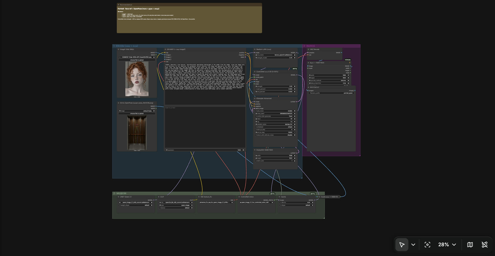
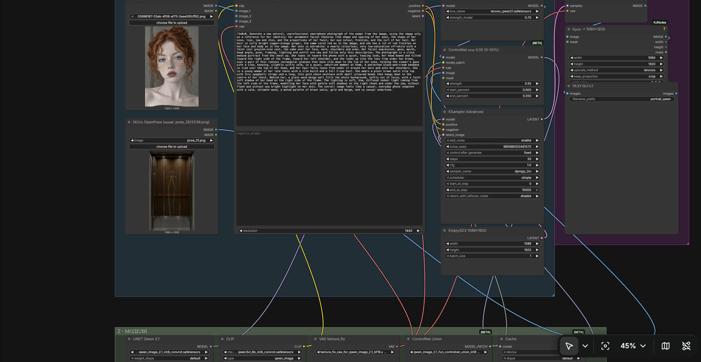
Pose from a skeleton, two-stage sampling.
Masked face upscale


The face is cropped, redrawn with the LoRA and pasted back without a seam.
Ref → video: 4 references into a clip with audio
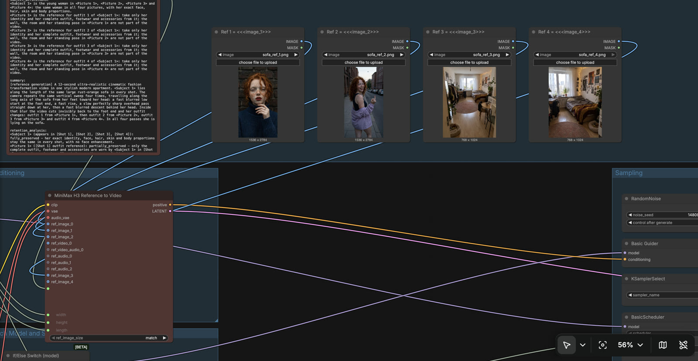
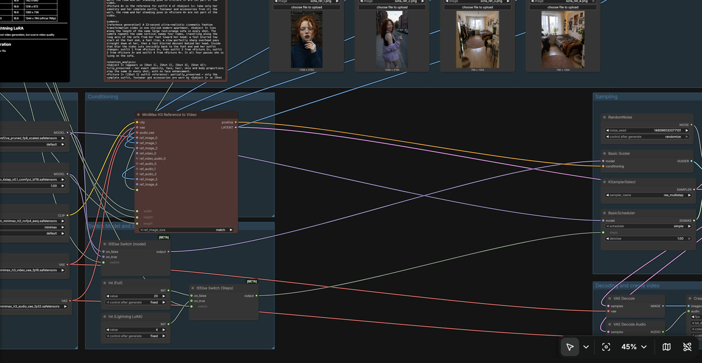
Face, outfit, pose and place as separate references.
Treadmill: 5 frame → video chains in one graph


5 prompts go “prompt → frame → video”; the output is 5 finished clips.
Image → video with audio and acceleration
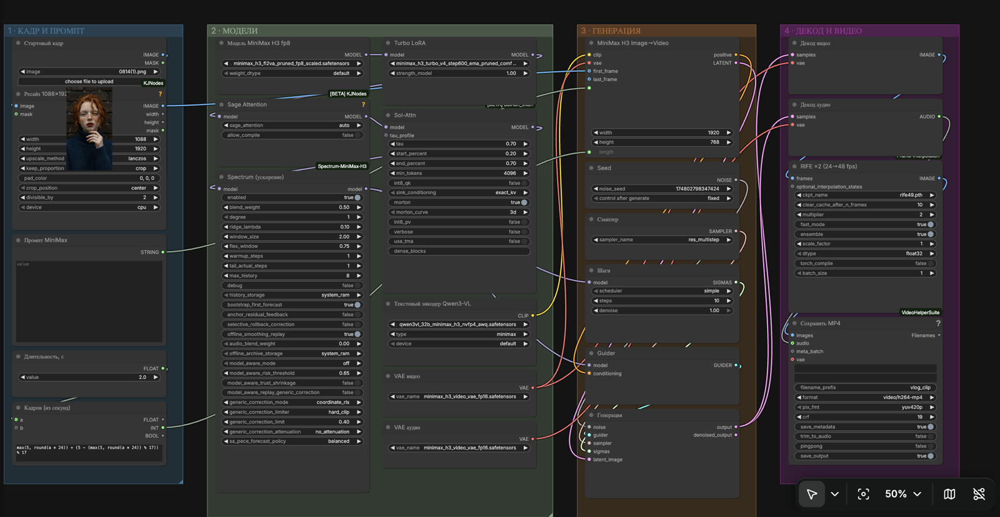
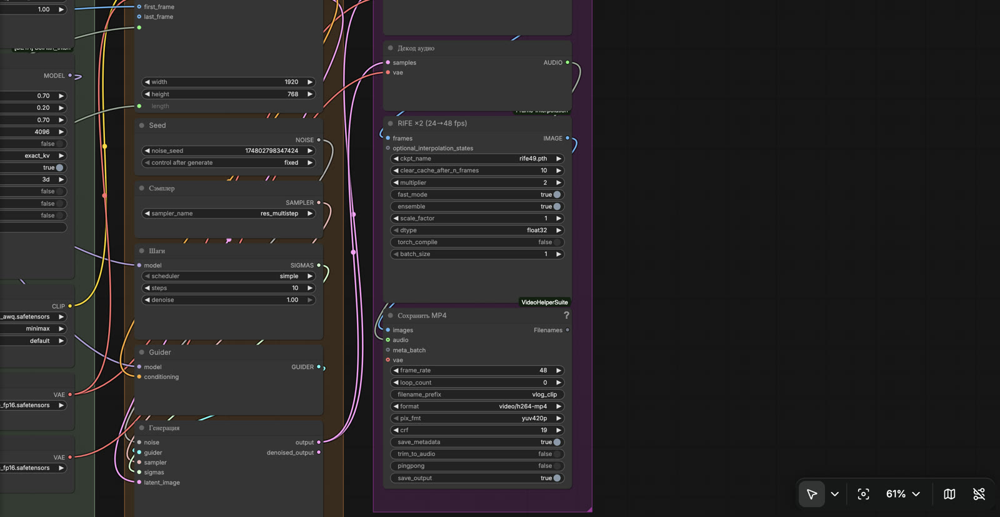
Speed optimisation on 4090/5090 without losing quality.
Multi-reference editing
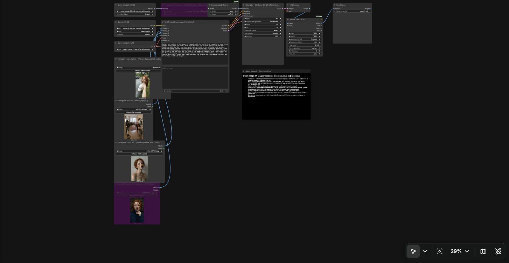

Replaces IP-Adapter: face, clothes and place go into the text encoder as images.
Services I've wired together
Reference search
- An agent writes the query
OpenCLI → Pinterestcollects results- Filtering and cropping in Python
- Upload to ComfyUI input
Cloud generation
RunPod REST: GPU choice, retries, price cap- Weights bootstrap from
HuggingFace/Civitai ComfyUI /prompt→/history→ download- Pod deleted when done
Text and scripts
Claudeplays roles: writer, generation, editingOpenRouter/Geminifor one-off tasks- Outputs checked by gates
Publishing and comms
Upload-Post/Zerniopublish the clipTelegram Bot API: reports and decision buttons- Comment and stats collection
The code behind it
ComfyUI API, RunPod, graphs
references, comments, stats
pose, steps, music rhythm
orchestrator, schedule, gates
bot reports
publishing
# comfy_client.py — queue a graph in ComfyUI and wait for the result def queue(url, graph): r = requests.post(f"{url}/prompt", json={"prompt": graph, "client_id": str(uuid.uuid4())}, timeout=30) data = r.json() if data.get("error") or data.get("node_errors"): raise RuntimeError(f"ComfyUI error: {data}") return data["prompt_id"] def wait(url, prompt_id, timeout, interval=5): start = last_contact = time.time() while time.time() - start < timeout: job = poll_history(url, prompt_id) if job: last_contact = time.time() if time.time() - last_contact > UNREACHABLE_AFTER: raise RuntimeError("pod stopped or crashed") if job and job["status"].get("status_str") == "error": raise RuntimeError(error_details(job)) # which node failed and why if job and job["status"].get("completed"): return job time.sleep(interval)